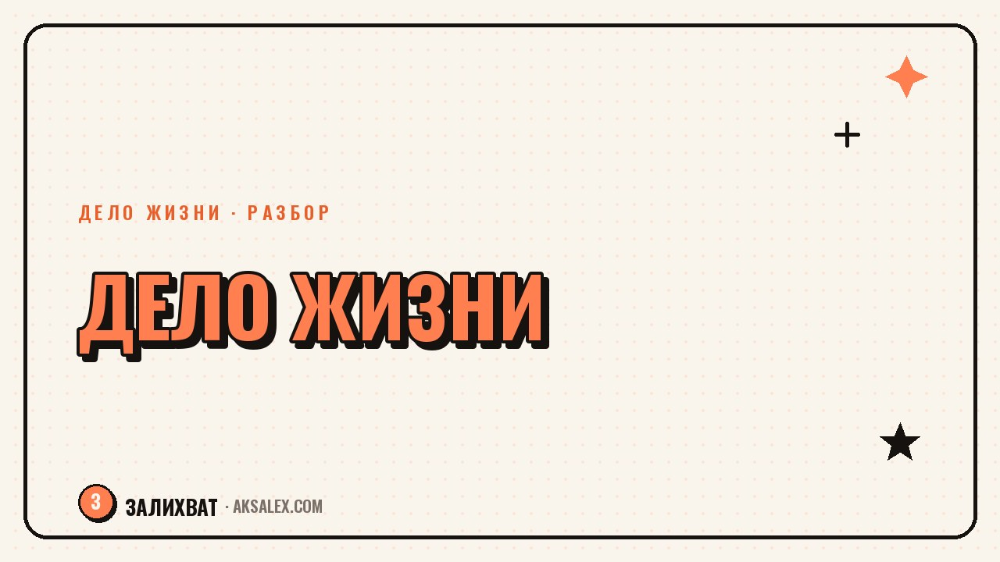

Как собрать дело жизни из того, что ты уже умеешь

Есть миф, что дело жизни нужно «найти» - как будто оно спрятано и ждёт, пока его обнаружат. На практике чаще получается иначе: дело собирают, как конструктор, из навыков, которые уже есть, просто раньше не складывались в одну картинку. Ты умеешь объяснять сложное простыми словами, разбираешься в цифрах, легко находишь общий язык с людьми - и по отдельности это кажется мелочью, а вместе может стать основой того самого дела. Разберём, как посмотреть на свой опыт под этим углом и собрать из него что-то цельное.
Почему «найти себя» - неудачная метафора
Когда дело жизни представляется как что-то, что нужно найти, человек начинает искать снаружи: смотрит на чужие профессии, листает вакансии, проходит тесты на профориентацию. Это редко работает, потому что дело жизни не лежит готовым где-то во внешнем мире - оно вырастает из твоего собственного опыта, и найти его получится только заглянув внутрь, а не вовне.
Более рабочая метафора - сборка. У тебя уже есть детали: то, что ты умеешь делать хорошо, то, что тебе интересно разбирать, то, в чём к тебе обращаются знакомые за советом. Задача не в том, чтобы найти недостающую деталь где-то на стороне, а в том, чтобы разложить то, что уже есть, и посмотреть, какая картинка из этого складывается.
Дело жизни редко приходит как озарение. Чаще это медленная сборка из навыков, которые ты уже применяешь каждый день, просто не считал их чем-то ценным.
Как разобрать свой опыт на детали
Навыки, о которых тебя просят
Вспомни, за какой помощью к тебе чаще всего обращаются друзья, коллеги, родственники. Кто-то просит помочь составить план, кто-то - разобраться в договоре, кто-то - подсказать, как оформить пост или письмо. То, что к тебе обращаются именно с этим, а не с чем-то другим, уже сигнал: у тебя это получается лучше среднего, просто ты привык не замечать очевидное для себя.
Темы, в которые ты закапываешься без напряжения
Есть темы, изучение которых ощущается как работа, а есть такие, в которые ты можешь провалиться на два часа вечером просто из интереса - и не устать. Это второй важный сигнал: там, где интерес не требует усилия воли, обычно и прячется направление, в котором стоит копать глубже.
Стык двух навыков вместо одного идеального
Часто ищут одну «суперспособность», а стоит смотреть на пересечение двух обычных. Например: разбираешься в бухгалтерии и любишь объяснять простыми словами - это уже основа для курса или консультаций для предпринимателей без экономического образования. По отдельности оба навыка массовые, а вместе - редкое и ценное сочетание.
Как проверить идею, не бросая текущую работу
Резкий уход «в неизвестность» пугает и часто оправданно - идея непроверенная, а обязательства (кредит, семья, аренда) никуда не деваются. Поэтому первый шаг - не увольнение, а маленький тест на стороне текущей занятости.
- Предложи помощь по своей идее трём знакомым бесплатно или за символическую цену - и посмотри на реальную реакцию, а не на воображаемую
- Заведи простую страницу или канал, где будешь показывать процесс - не жди готового продукта, чтобы начать
- Посчитай, сколько времени в неделю реально можешь выделять на идею без ущерба сну и текущей работе
- Договорись с собой на конкретный срок теста, например три месяца, и конкретный критерий успеха, а не «как пойдёт»
Такой тест снимает главный страх - не придётся сжигать мосты ради гипотезы. Если идея не сработает, ты просто попробовал и перешёл к следующей, а не потерял месяцы дохода на непроверенную ставку.
Форматы, в которые превращается собранное дело
Один и тот же набор навыков можно упаковать по-разному, и разные форматы требуют разного уровня вложений на старте.
| Формат | Что нужно на старте | Кому подходит |
|---|---|---|
| Разовые консультации | Ничего кроме навыка и первых клиентов из своего круга | Тем, кто хочет проверить спрос без вложений |
| Небольшой курс или гайд | Время на упаковку опыта в структуру | Тем, у кого уже есть накопленный опыт, который можно передать |
| Услуга под ключ | Портфолио примеров и немного смелости назначить цену | Тем, кто хочет стабильный доход, а не разовые подработки |
| Контент про свою тему | Регулярность и готовность показывать процесс, а не только результат | Тем, кому важно строить репутацию и доверие постепенно |
Что делать, если кажется, что «ничего особенного не умеешь»
Это одно из самых частых ощущений на старте, и оно почти всегда обманчиво. То, что для тебя очевидно и просто, для человека без этого навыка выглядит как магия - именно поэтому свой собственный опыт так трудно оценить объективно.
Рабочий способ проверить это - спросить у трёх-пяти человек из разного окружения, в чём они видят твою сильную сторону. Часто ответы неожиданно совпадают друг с другом и с тем, о чём тебя просят чаще всего - это и есть та самая деталь, с которой стоит начинать сборку.
Частые вопросы
Как найти любимое дело в жизни, если сейчас работа совсем не своя?
Начни не с поиска новой профессии, а с разбора того, что ты уже умеешь и что у тебя чаще всего просят сделать другие люди. Дело жизни обычно собирается из существующих навыков, а не приходит откуда-то извне.
Сколько времени обычно уходит на то, чтобы собрать своё дело?
Универсального срока нет, но разумно закладывать несколько месяцев на тесты и обратную связь, прежде чем принимать решение уходить с основной работы. Спешка на этом этапе чаще вредит, чем помогает.
Что делать, если идея не понравилась первым клиентам?
Это нормальная часть проверки - лучше узнать это на бесплатном тесте с тремя людьми, чем через полгода после серьёзных вложений. Скорректируй формат или аудиторию и попробуй снова.
Обязательно ли увольняться, чтобы заняться своим делом?
Нет, и чаще правильнее не увольняться сразу. Сначала стоит проверить идею на небольшом объёме времени рядом с текущей работой и только потом принимать решение о полном переходе.
Как понять, что найденное направление - действительно моё?
Хороший признак - когда ты возвращаешься к теме без внешнего давления, из интереса, а не из чувства долга. Если через несколько недель тестов интерес не угасает, а растёт - это надёжный сигнал двигаться дальше.
Раз тема оказалась полезной, вот что почитать следующим. Нейросеть доступна в три часа ночи и не устаёт от одних и тех же вопросов. Разбираем, как выжать из неё максимум при изучении языка.
Читать статью →а не вручную